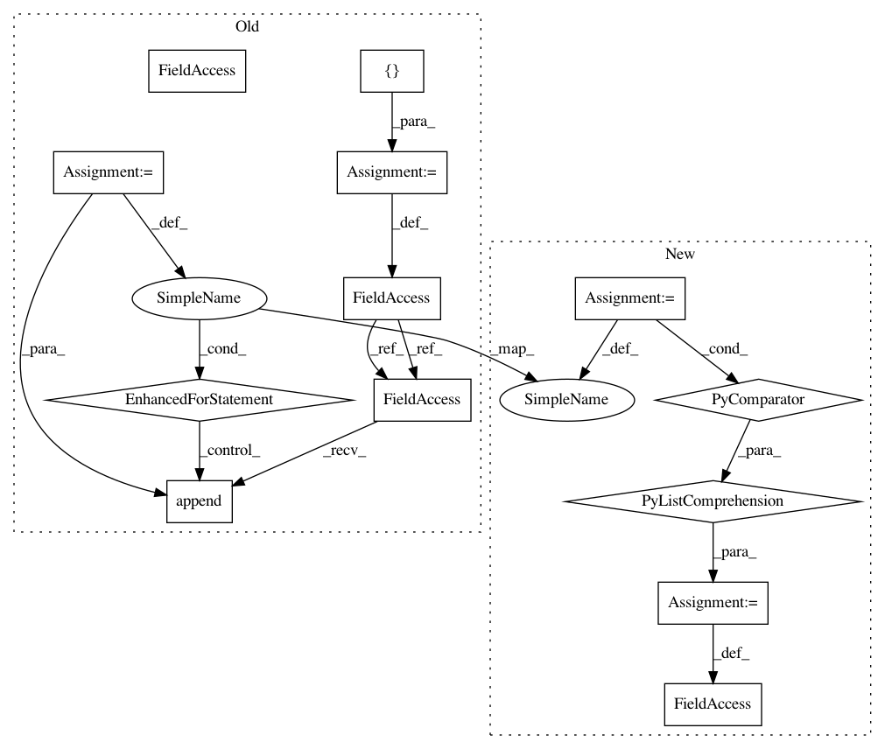

97b74b011d7f4e3a144be6417a7285c0fc91fd72,nussl/separation/ica.py,ICA,run,#ICA#,40
Before Change
self.mixing = ica.mixing_
self.mean = ica.mean_
self.sources = []
for i in range(sources.shape[0]):
signal = nussl.audio_signal.AudioSignal(audio_data_array=sources[i, :],
sample_rate=self.audio_signal.sample_rate)
self.sources.append(signal)
return self.sources
def make_audio_signals(self):
Returns the background and foreground audio signals. You must have run ICA.run() prior
After Change
// store the resultant computations
self.estimated_mixing_params = ica.mixing_
self.mean = ica.mean_
self.estimated_sources = [nussl.AudioSignal(audio_data_array=ica_output[i, :],
sample_rate=self.audio_signal.sample_rate)
for i in range(ica_output.shape[0])]
return self.estimated_sources
def make_audio_signals(self):
In pattern: SUPERPATTERN
Frequency: 3
Non-data size: 13
Instances
Project Name: interactiveaudiolab/nussl
Commit Name: 97b74b011d7f4e3a144be6417a7285c0fc91fd72
Time: 2017-09-16
Author: ethanmanilow@gmail.com
File Name: nussl/separation/ica.py
Class Name: ICA
Method Name: run
Project Name: akkana/scripts
Commit Name: 540d6207e272e2ffbe1bd69732fcc3acbebb2704
Time: 2019-05-08
Author: akkana@shallowsky.com
File Name: mpl_smart_dates.py
Class Name:
Method Name:
Project Name: gooofy/zamia-speech
Commit Name: 79aebeb14bf19333e61ee305b99f91dd191942d7
Time: 2018-12-10
Author: guenter@zamia.org
File Name: speech_editor.py
Class Name:
Method Name: